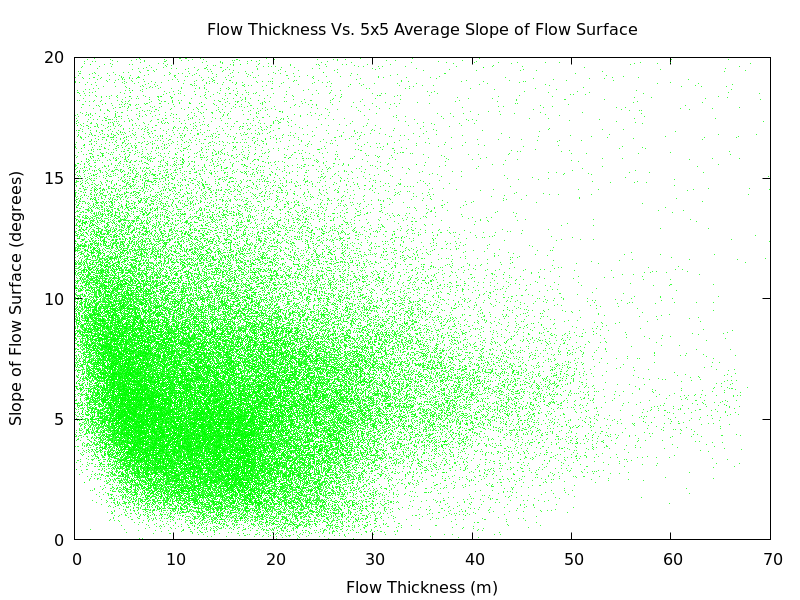

Previous work in Tobalchik shows the importance of input parameters over resolution for hazard assessment (Kubanek et al. 2015). Current lava flow volume calculation methods poorly represent flow morphology. Finding inverse relationship between slope and thickness of lava flow that’s been qualitatively observed (Deardorff and Cashman 2012, Gregg and Fink 2000, Tarquini et al. 2012). Provide quantitative data for qualitative observations relating slope and flow morphology.
Planimetric: Volume determined by mean thickness multiplied by flow area. Interpolated Base Surface: Surface created using points outside flow, and the difference between new base surface and flow surface is used to determine volume. DEM Difference: Volume determined by the difference between DEM for known base and flow surfaces. Volumes from known basal surfaces have lower error of 2-6% compared to planimetric with error of 25-30% (Albino et al. 2015). Volumes from interpolated basal surface are lower than volumes from a known basal surface by a factor of 2 to 3 times (Albino et al. 2015).
Figure 1a: Plot of of volumes calculated from the Lassen regional volcanism. Volume calculations include the Planimetric method as well as three different interpolation volumes to give a range of possible volumes for each event. IDW4 represents volume calculated using a 4-sector inverse distance weighted average solution for the interpolated base surface based on points within 50m of the flow boundary. GPI1 and GPI2 represent volumes based on the 1st and 2nd-order global polynomial interpolations for base surface using topography within 200m of the flow boundary.
Figure 1b: Test of web-based plotting for Figure 1a. Blue dots represent data for the IDW4 method described above including the volume above and below the flow surface while orange dots represent the same for GPI1 and green dots for GPI2.
Figure 2: Workflow of the slope codes including equations for calculation of Planar and Average slope.
Average Calc Latex Code Source code for the visualization linked above.
Planar Fit Latex Code Source code for the visualization linked above.
Average Slope Visualization of the average slope for six data points using the equations seen in Figure 2 above.
Code Source code for the visualization linked above.
Figure 3: Slope Maps of the Tolbachik lava flow area before and after eruption on the 27th of November 2012. Both maps display results from the Average slope method using a 5x5 matrix, so slope calculations are averaged over areas of 80m2 for each point within the lava flow based on the 16m resolution of elevation data.

Figure 4: Plots of Base Surface Slope Vs. Flow Surface Slope as results from both the Planar and Average Slope calculation methods. Results are shown with increasing values of matrix size N to show increasing correlation between the two slopes as the area of slope calculation increases. Results show poor correlation between the two slopes at local scales (smaller area of calculation) while there is a good correlation between the slopes at more regional scales (larger area of calculation). Data from the Average Slope method shows better correlation than the Planar Slope results.

Figure 5: Plots of Lava Flow Thickness Vs. Average Slope of Base and Flow Surfaces. Contrary to qualitative observations in aforementioned research, results from the full data set show poor correlation between the slope and thickness of the 2012 Tolbachik lava flow. While these results show no correlation, data filters including evaluation of the change in slope, distance from the vent, and the roughness of the surface may reduce noise in the data, and show some correlation not visible in the full data set.
Albino, F., B. Smets, N. d'Oreye, and F. Kervyn (2015), High-resolution TanDEM-X DEM: An accurate method to estimate lava flow volumes at Nyamulagira Volcano (D. R. Congo). J. Geophys. Res. Solid Earth, 120, 4189–4207. doi: 10.1002/2015JB011988.
Deardorff, N.D. & K.V Cashman. Bull Volcanol (2012) 74: 2051. doi:10.1007/s00445-012-0650-9
Gregg, Tracy K.P, Jonathan H Fink, A laboratory investigation into the effects of slope on lava flow morphology, Journal of Volcanology and Geothermal Research, Volume 96, Issues 3–4, March 2000, Pages 145-159, ISSN 0377-0273, http://dx.doi.org/10.1016/S0377-0273(99)00148-1.
Kubanek, J., J.A Richardson, S.J Charbonnier et al. Bull Volcanol (2015) 77: 106. doi:10.1007/s00445-015-0989-9
Tarquini, Simone, Massimiliano Favalli, Francesco Mazzarini, Ilaria Isola, Alessandro Fornaciai, Morphometric
analysis of lava flow units: Case study over LIDAR-derived topography at Mount Etna, Italy, Journal of
Volcanology and Geothermal Research, Volumes 235–236, 1 August 2012, Pages 11-22, ISSN 0377-0273,
http://dx.doi.org/10.1016/j.jvolgeores.2012.04.026.